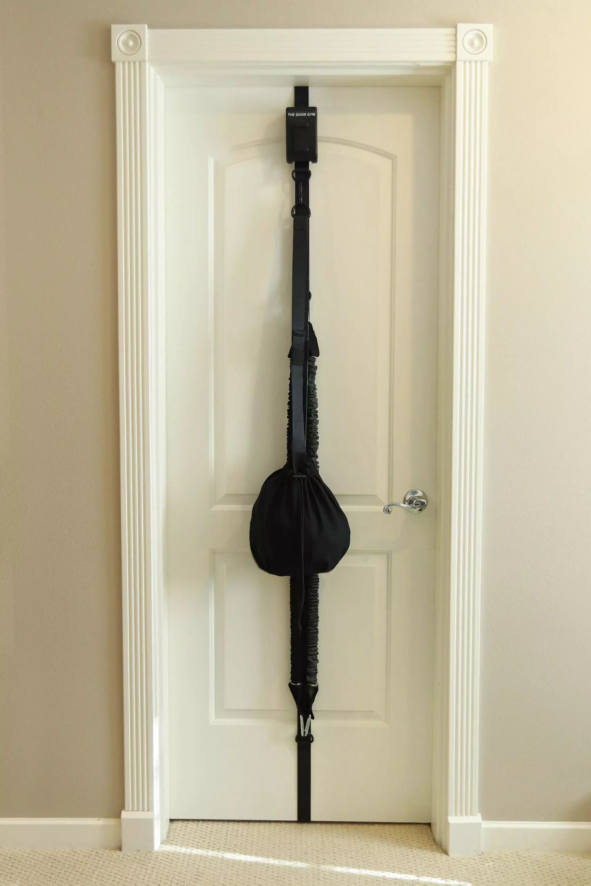
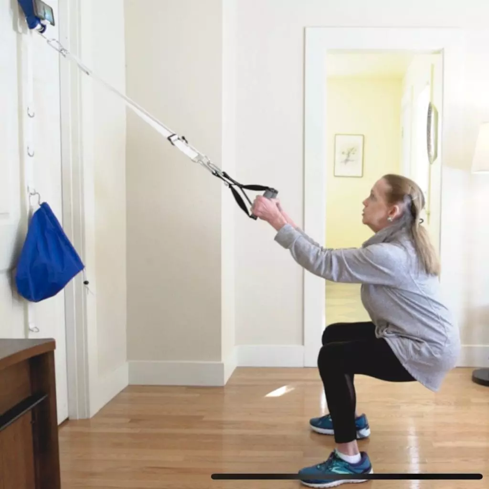

Our Story
I’m Robert Evans, the inventor and founder of The DoorGym. Thank you for visiting our website. Our goal is to make getting a fantastic workout at home easier than ever.
After studying Biology in college with plans to go to medical school, I began to understand that the best medicine is exercise and in particular, strength training. This is something that I learned firsthand, as I had been working as a personal trainer for nearly 10 years when my little brother Paul, who suffered from bipolar disorder, took his own life in 2016. It had been obvious that when I took him to the gym with me he always felt much better after.
I blamed myself for not doing more and fell into a severe depression. It was exercise and not medication that lifted me out of it. I soon began looking at ways to go beyond one on one training in order to help those like my brother, who may not have access to a personal trainer.

My mom was also really depressed about losing my brother. After taking a terrible fall and fracturing her spine, it became impossible for her to go to the gym. I began learning more about strength training for seniors and discovered that the number one reason the elderly move into nursing homes is losing the strength to do basic things such as using the rest room.
After looking at the limitations of existing products, I decided that I had to create something new. I bought a sewing machine and began making prototypes. I’m happy to say that my mom has made a full recovery. There she is practicing an assisted squat.
The DoorGym is not only great for seniors but for everyone who wants a better way to workout at home. From physical therapy to elite athletic training, the safety and security that The DoorGym provide make things easier, more accessible and more affordable than ever before.
Our black on black unit is now available on our shop page. Our white and camouflage units will be available in early 2021, when we launch out KickStarter campaign.
We have an app with over 250 guided exercises which is in late stage development. iOS users will receive an invite to join our beta testing. Android will be available soon.
Subscribe to our email list below for updates and promotions; we would love to have you as a part of our community.
I have been very fortunate to surround myself with a team of brilliant people who have been of tremendous importance in helping me to bring this to life.